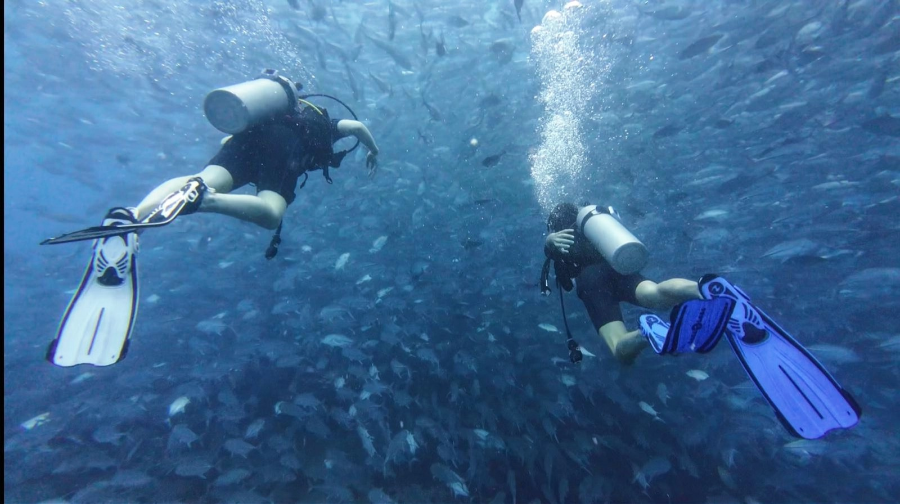
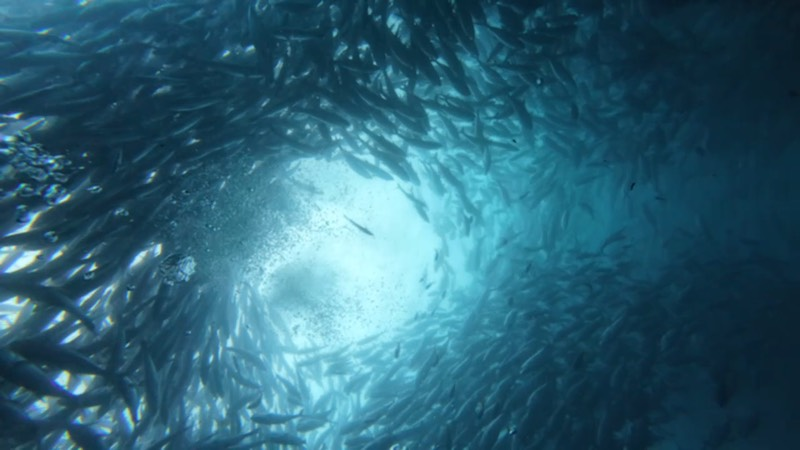
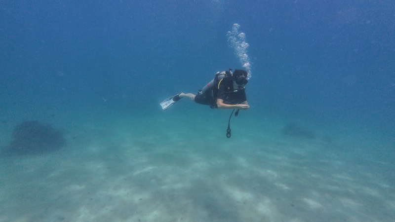
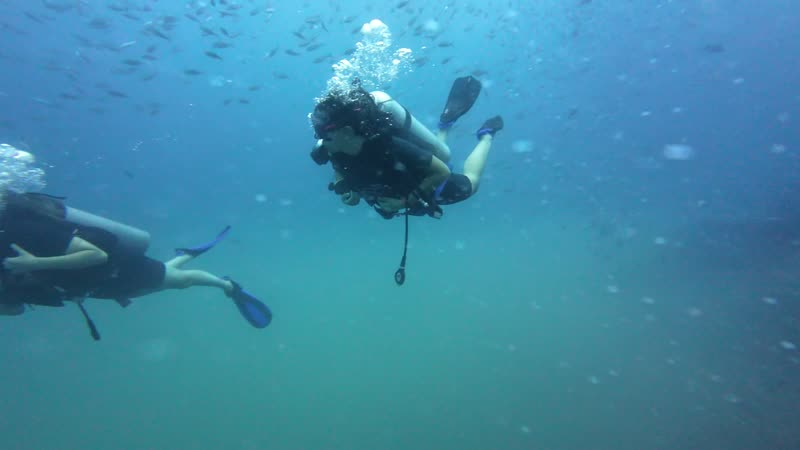
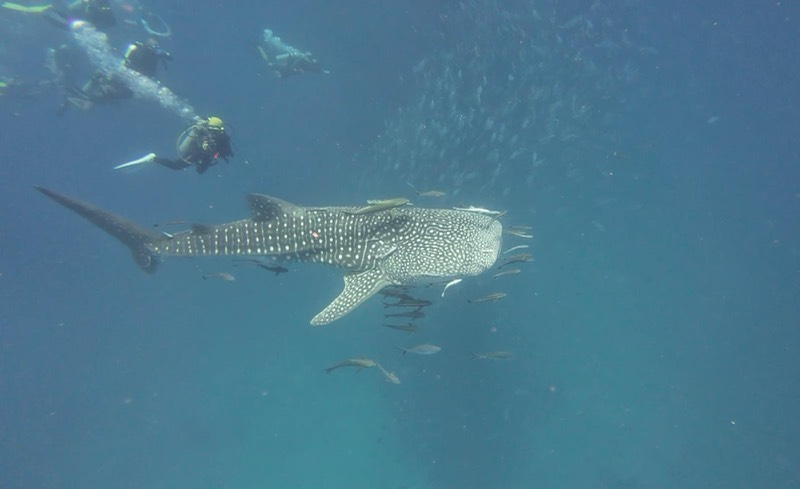

Inicio / Experiencias
Experiencias de buceo
en Koh Phangan
Bucea con tu titulación o respira bajo el agua por primera vez. Salidas diarias a Sail Rock desde Chaloklum, en nuestro propio barco. Cada salida incluye instructor o guía SSI, equipo completo, comida caliente, fruta y bebidas, y el vídeo submarino de tu inmersión.

Sail Rock · temporada de barracudas
Buceadores titulados · 1 día
Fun Dive
Tienes titulación y quieres aprovecharla de verdad. Máximo cuatro buceadores por guía, para que nadie vaya en rebaño. Elegimos la ruta por la mañana según la marea y la previsión (Sail Rock, Koh Ma, Little Sail Rock o la plataforma petrolífera) y, cuando las condiciones lo permiten, encadenamos varios puntos en un mismo día.
- Duración
- 1 día
- Grupo
- 4 máx.
- Requisito
- Cualquier titulación
- Precio
- 3,200฿
- Equipo completo, de la XS a la XXL
- Comida caliente, fruta, bebidas frías y calientes
- Vídeo submarino de tu inmersión
- Nitrox bajo petición

Koh Ma · sin corriente, 5–18 m
Sin titulación · 1 día
Bautismo (Try Dive)
La primera vez que respiras bajo el agua es una sensación extraña y muy buena, y no hay que ir con prisas. Es un día completo con un máximo de dos alumnos por instructor: atención de verdad, no una cola. Empezamos en las aguas tranquilas y sin corriente de Koh Ma y, si te sientes cómodo, también puedes ir a Sail Rock.
- Duración
- 1 día
- Ratio
- 2:1
- Edad mínima
- 8 años
- Precio
- 4,200฿
- Todo explicado desde cero
- Todo el equipo en tu talla
- Comida caliente, fruta, bebidas frías y calientes
- Vídeo submarino de tu inmersión

Un día completo en el agua
Sin titulación · 1 día
Basic Diver
Un paso más que el bautismo y la mejor relación calidad-precio de esta página. Un día completo te da tiempo para aprender de verdad (máscara, flotabilidad, compensación, señales) en vez de simplemente sobrevivir a la experiencia. Además es la antesala natural del curso Open Water, y casi todo lo que aprendes aquí te sirve directamente.
- Duración
- 1 día
- Edad mínima
- 10 años
- Siguiente paso
- Open Water
- Precio
- 4,900฿
- Instructor SSI durante todo el día
- Todo el equipo incluido
- Comida caliente, fruta, bebidas frías y calientes
- Vídeo submarino de tus inmersiones

Sail Rock · desde la superficie
Para todos · 1 día
Snorkel
en Sail Rock
Sail Rock sube desde 40 metros hasta sobresalir del agua, así que lo bueno empieza en los primeros metros. Ven por el paseo en barco y quédate en superficie: así las familias van todos en la misma salida, y así quien está nervioso descubre si quiere bajar más.
- Duración
- 1 día
- Requisito
- Saber nadar
- Barco
- 20 máx.
- Precio
- 1,500฿
- Máscara, tubo y aletas
- Comida caliente, fruta, bebidas frías y calientes
- El mismo barco que los buceadores
- Chaleco de flotación bajo petición
¿Venís en grupo
o con niños?
Dinos las edades, los niveles de experiencia y vuestras fechas, y preparamos un día que funcione para todos en un mismo barco: buceadores abajo, snorkel arriba. Los niños pueden hacer el bautismo desde los 8 años y el Open Water desde los 10.
¿Qué incluye cada precio?
Tu instructor o guía SSI, equipo completo (reguladores, jacket y neopreno de la XS a la XXL, todo nuevo de 2024), una comida caliente con arroz entre inmersiones, mucha fruta y bebidas frías y calientes a bordo, y el vídeo submarino de tu inmersión, que te enviamos después.
¿A qué hora salimos y volvemos?
Salimos a las 9:30 desde Chaloklum, así llegamos a los puntos cuando otros barcos ya vuelven. El barco está de vuelta en el muelle de Chaloklum hacia las 15:00, con tiempo de sobra si tienes un ferry a las 17:00. Pasa por la tienda de Chaloklum el día antes para rellenar la ficha de inscripción, y el día de la salida te esperamos en el barco, en el muelle de Chaloklum, a las 9:15. Todo el equipo ya está a bordo, así que no hace falta probárselo en la tienda.
¿Puedo hacer un Fun Dive si hace años que no buceo?
Sí. Dinos cuánto tiempo hace cuando nos escribas y planificaremos la primera inmersión como repaso (poco profunda, tranquila y sin prisas) antes de algo más ambicioso.
¿Qué pasa si hace mal tiempo?
La seguridad es lo primero, y la decisión es nuestra: si cancelamos el barco por el tiempo, te devolvemos el dinero íntegro. Un poco de lluvia por la mañana no nos para: lo que decide son las condiciones del mar. La temporada de mal tiempo es el monzón, más o menos de noviembre a mediados de diciembre.
¿Cómo reservo y pago?
Mándanos tus fechas y tu nivel por WhatsApp. Un depósito asegura tu plaza, y puedes pagar en efectivo o por Revolut. Rellena la ficha de inscripción en la tienda el día antes; abre todos los días de 9:00 a 19:00.
¿Recogéis en el hotel?
No: los taxis en Koh Phangan son caros, y alquilar una moto para el día (unos 250฿) es más barato y más fácil. La tienda está en el pueblo de Chaloklum, en la costa norte, y el barco sale del muelle de Chaloklum.